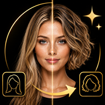

Hair Style Me
Hair Style Me lets you try hairstyles from any reference photo using AI.
Simply choose a photo of yourself, select a hairstyle reference photo, and let AI create a new version of your photo with the selected hairstyle.
The app is designed to preserve your facial identity and overall appearance while changing the hairstyle to match the reference image as closely as possible.
Perfect for previewing a new haircut before visiting the salon, exploring different looks, or trying hairstyles you find in photos online or elsewhere.
Features
- Try hairstyles from any reference photo
- Use your own photo as the base image
- AI-powered hairstyle transformation
- Preserve your facial identity
- Try short, medium, long, curly, layered, and other hairstyles
- Preview hairstyles before visiting the salon
- Suitable for both women and men
- Generate results in about one minute
- Save generated images to your Photos library
- Share your results instantly
- Simple and easy-to-use interface
- Purchase only the credits you need
- No subscription required
Frequently Asked Questions
-
Q: What does this app do?
A: Hair Style Me uses AI to apply the hairstyle from a reference photo to your own photo so you can preview a different haircut or hairstyle.
-
Q: How do I use the app?
A: Select a photo of yourself, choose a second photo containing the hairstyle you want to try, then tap Generate. The AI will create your new look.
-
Q: What kind of photo works best for my photo?
A: Clear photos with good lighting and a clearly visible face generally produce the best results. Photos where the head and hair are fully visible are recommended.
-
Q: What kind of hairstyle reference photo works best?
A: Choose a clear photo where the hairstyle is easy to see from the roots to the ends. Photos without hats or large hair accessories generally work best.
-
Q: Can I use any hairstyle photo?
A: Yes. You can choose your own hairstyle reference image instead of being limited to a preset hairstyle catalog.
-
Q: Will the AI keep my face recognizable?
A: The AI is designed to preserve your facial identity and overall appearance while changing the hairstyle. Results may vary depending on the photos provided.
-
Q: Does Hair Style Me change my hair color?
A: The app primarily focuses on transferring the hairstyle while generally preserving the hair color of your original photo. Results may vary depending on the reference image.
-
Q: Can men use the app?
A: Yes. Hair Style Me can be used to try both women's and men's hairstyles, including short cuts, longer styles, curls, fades, and other looks.
-
Q: How long does generation take?
A: Most hairstyle transformations are generated within about one minute, depending on server availability and network conditions.
-
Q: How do credits work?
A: Each successful hairstyle generation uses one credit. Additional credits can be purchased whenever you need them.
-
Q: Is there a subscription?
A: No. Hair Style Me uses a credit-based system with no recurring subscription.
-
Q: Does the app require an internet connection?
A: Yes. An internet connection is required because AI image generation is performed on remote servers.
-
Q: Are my photos stored permanently?
A: Photos are sent for the purpose of generating your hairstyle transformation and are not stored permanently by the app.
-
Q: Can I save or share my generated image?
A: Yes. You can save the generated image to your Photos library or share it using the iOS share sheet.
-
Q: Can children use this app?
A: The app is intended for teenagers and adults. Some images may not be processed depending on the safety policies of the AI image generation service.
📩 Contact
If you have any questions or encounter issues, feel free to contact us:
← Back to Support Center